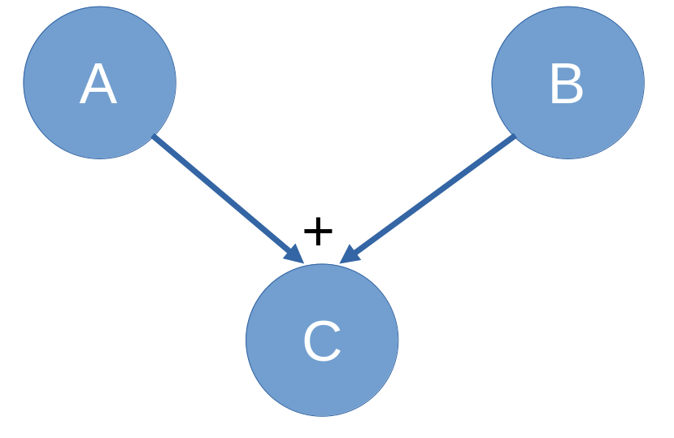
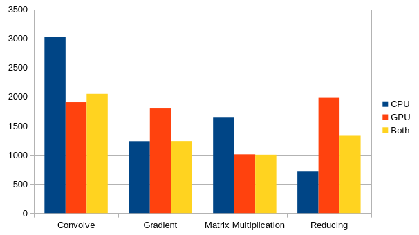

General Usage
What does Flint do?
Flint provides you with a Framework to create and manipulate Tensors. Tensors are just multidimensional data arrays with the same shape along each dimension.
A Vector or a Matrix are Tensors too. You can create a 6-dimensional Tensor with the shape of 256, 128, 64, 32, 1024, 53 (here shape is always denoted from inner to outer, so 256 is the outer most dimension).
The great thing about Flint: you can apply operations to those Tensor, for example addition, multiplication, you can convolve Tensor, do Matrix multiplication and so on.
Flint is then able to execute those operations, which are stored in an operational graph.
(a graph were each node either represents a data node (so it stores data you calculated or put there) or a operation itself, that has been executed or still has to be executed. Those nodes can be connected in a graph: e.g. if you sum up to nodes A and B to the result C, the node C is the child of its parents A and B).

Allthough if you use the C++ frontend you won't get in touch too much with this graph it enables efficient gradient calculation which is the core functionality for machine learning in a Tensor Execution framework. You can execute these Tensor on your CPU or on a OpenCL capable device like a GPU, for more see the Execution section.
Flint provides an automatic memory management system for your Tensors and all their allocated data with reference counting in the graph, for more see the Data section.
The great thing about Flint: you can apply operations to those Tensor, for example addition, multiplication, you can convolve Tensor, do Matrix multiplication and so on.
Flint is then able to execute those operations, which are stored in an operational graph.
(a graph were each node either represents a data node (so it stores data you calculated or put there) or a operation itself, that has been executed or still has to be executed. Those nodes can be connected in a graph: e.g. if you sum up to nodes A and B to the result C, the node C is the child of its parents A and B).
Allthough if you use the C++ frontend you won't get in touch too much with this graph it enables efficient gradient calculation which is the core functionality for machine learning in a Tensor Execution framework. You can execute these Tensor on your CPU or on a OpenCL capable device like a GPU, for more see the Execution section.
Flint provides an automatic memory management system for your Tensors and all their allocated data with reference counting in the graph, for more see the Data section.
Execution of Tensors
There are two different backends for the execution of Operations with two different execution strategies.
- Lazy Execution: the nodes are only executed if the operation enforces it (e.g. matrix multiplication or reduction enforces complete execution of the parental nodes)
or `fExecuteGraph` (in C) or `.execute()` (in C++) is called.
Else the graph is constructed with the operations, but the result data is only calculated for a node if it is executed.
- CPU Backend
A simple thread pool that is initialized with as many threads as your CPU supports. The calculation of a operation may be split into multiple work packages that are then distributed to the threads.
In the case that parental nodes don't have result data yet, those are executed first (i.e. the unexecuted parental subtree of the node is executed sequentially in its topological order).
Fast for small Tensors or lightweight operations since the overhead is little. - OpenCL Backend
Constructs a OpenCL kernel for the complete unexecuted graph and executes it (has a cache to lookup and store already compiled kernels). This allows implicit execution of only those parts of the parental data of a node that are actually important for the last node. E.g.Tensor<float, 3> m1 = Tensor<float, 3>::constant(3.141592, 128, 128, 128); Tensor<float, 3> m2 = Tensor<float, 3>::constant(42.0007, 128, 128, 128); Tensor<float, 3> m3 = m1.matmul(m2).slice(TensorRange(0, 4), TensorRange(0, 4), TensorRange(0, 2)); m3.execute();
Here it is possible for the GPU Backend to lazily only compute the 4*4*2 elements of m3 and their corresponding elements in the Matrix multiplication without having to calculate the other 2097120 elements (128*128*128 = 2097152 elements).
Benchmarks of example programs on an Intel i5 10600K and an AMD Radeon 5700XT,
time in milliseconds - CPU Backend
-
Eager Execution: Each node has to be executed during construction. The OpenCL backend then resorts to the generation of general operation kernels for each operation
(one program per operation, one kernel per possible datatype combination of the parameters).

Benchmarks of example programs on an Intel i5 10600K and an AMD Radeon 5700XT,
time in milliseconds
Data Management and Initialization
TODO